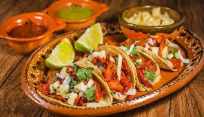

TACOS
PARRILLADAS

Somos un equipo de entusiastas de los tacos, dedicados a traerles los sabores auténticos y tradicionales de México. Nuestra pasión por los tacos nos ha llevado a explorar cada rincón de México en busca de los mejores ingredientes y recetas. En *TacoLoco*, creemos que cada taco cuenta una historia, una historia de cultura, tradición y sabor. Nos esforzamos por compartir estas historias con ustedes a través de nuestros deliciosos tacos. Nuestro objetivo es proporcionar una experiencia culinaria inolvidable que celebre la rica diversidad de la cocina mexicana. Tenemos algo para todos los amantes de los tacos. Así que únase a nosotros en esta deliciosa aventura y descubra el verdadero sabor de México en cada bocado. ¡Bienvenidos a *TacoLoco*!